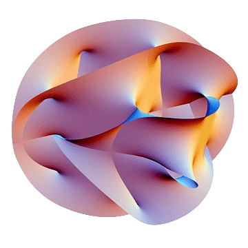
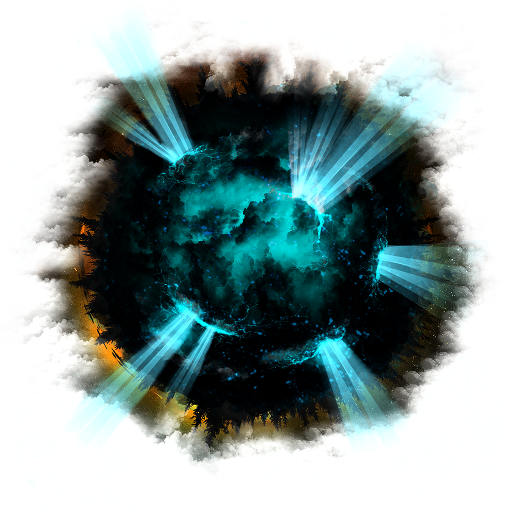

Theories and Discoveries
Quantum Mechanics and Its Implications
Quantum mechanics has revolutionized our understanding of the microscopic world. It introduces concepts such as superposition and entanglement, challenging classical interpretations of physics. These principles have profound implications for fields ranging from computing to cosmology.

String Theory: A New Dimension
String theory proposes that the fundamental particles of the universe are not point-like but rather one-dimensional strings. This theory suggests the existence of multiple dimensions beyond our observable universe and seeks to unify gravity with the other fundamental forces.
Dark Matter and Dark Energy
Dark matter and dark energy are two of the most mysterious components of our universe. While dark matter is believed to make up a significant portion of the universe's mass, dark energy is thought to be responsible for the accelerated expansion of the universe. Ongoing research aims to uncover their true nature and implications.
Recent Discoveries in Astrobiology
Astrobiology explores the potential for life beyond Earth. Recent discoveries of extremophiles on our planet and exoplanets in habitable zones have expanded our understanding of where life might exist in the universe. Ongoing missions continue to search for signs of life on Mars and icy moons like Europa and Enceladus.